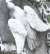
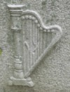
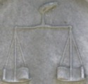
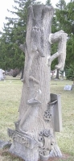
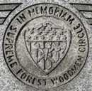

This is a list of symbols I have seen on gravestones while cemetery exploring. More symbols and explanations will be added over time.
Please note - all the photos below were taken by me. If you'd like to know which cemetery they were taken at, please e-mail me.
SYMBOL
MEANING
Agnus Dei
Represents the Lamb of God.
Alpha and Omega
First and last letters of the Greek alphabet. Symbolizes the beginning and the end.
American Legion
Found on graves of people who were American Legion members, an organization for veterans.
Anchor
Hope or eternal life. Often on sailors' graves. Anchors are also a Masonic symbol for well-grounded hope, therefore they are often found on Masons' graves.
Angel
A guide to heaven.
Saint Matthew, one of the four evangelists, was often represented as a winged man.
Ankh
An Egyptian symbol of eternal life.
Anvil
Symbolizes the creation or forging of the universe. Also found on blacksmiths' graves.
A.O.U.W.
Ancient Order of United Workmen, a fraternal benefit society. Click here for more information (offsite link).
Apple
Apples represent salvation, sometimes sin.
A.R.
Arbeiter Ring, an American Jewish fraternal organization committed to social justice. Later became the Workmen's Circle.
Arch
The passage to heaven.
Arrow
Arrows symbolize mortality and martyrdom.
Artillery
Artillery, such as cannons, on a gravestone usually represents military service.
Baha'i
Symbol of the Baha'i Faith, a monotheistic religion. For more information, please visit their official website.
Beehive
Often used by the Freemasons and Independent Order of Odd Fellows. It symbolizes human industry, faith, education, and domestic virtues.
Bell
Often symbolizes a church bell, and therefore religion.
Bible or Book
Often used on the gravestones of ministers or clergymen. However, it is sometimes found on gravestones of very devoted religious people also. Books may also represent a person's good deeds and accomplishments being recorded in the book of life.

Bird
Peace, messenger of God. The most common birds found on gravestones are doves.
Bones
Death, decay.
Boat
A voyage; crossing over to the other side.
B.P.O.E. with Elk
B.P.O.E. stands for Benevolent Protective Order of Elks, a fraternal organization.
Broken Bud or Branch
Someone who died an untimely or premature death. Usually seen on a younger person's gravestone.
Broken Chain Link
Symbolizes a loss in the family.
Broken Wheel
Symbolizes the end of life; a break in the circle or wheel of life.
BRT with a Train
Brotherhood of Railroad Trainmen. A fraternal organization for men who worked as trainmen.
Butterfly
Symbolizes resurrection, and also the soul leaving the body/flesh.
Calla Lily
Flower that represents beauty.
The Canadian Legion of British Empire Service League
A Canadian organization formed in the 1920's for war veterans and their dependants. Usually seen with a maple leaf.
Century Plant
Represents immortality; everlasting life.
Circle
Eternal life - no beginning, no end.
Clasped Hands
Farewell to earthly existence. Also unity. Often used as a Masonic and I.O.O.F. symbol. Deborah, a website visitor, told me that in the Native American culture clasped hands represent a Delaware grave.
Clock
Mortality, death; the passage of time.
Coffin
Symbolizes mortality and death.
Cohanim Hands
Hands with thumbs (and sometimes forefingers) joined. This is a Jewish symbol that represents members of the priestly tribe of Aaron.
Colonial Daughters of the 17th Century
An organization for women who descended from an ancestor who rendered service in the Colonial wars from 1607 to 1699.
Column
Mortality. A draped or broken column represents the break in earthly to heavenly life. The draped arch also symbolizes mourning.
Comedy and Tragedy Masks
Symbol of drama and theatre. Also known as theatre masks.
Corn
Rebirth, fertility.
Cornucopia
Also known as the "Horn of Plenty." Symbolizes an abundant, fruitful life. Also a symbol of the harvest, which in turn symbolizes the end of life.
Crooks
Shepherds crooks, usually found on graves of Independent Order of Odd Fellows members (a fraternal organization). Symbolizes the opening of earth to the heavens.
Cross
A cross represents Christianity.
Crown
Victory or triumph over death.
Crown and Cross
Symbolizes both victory and Christianity. Also, this symbol sometimes denotes a member of the York Rite Masons.
D of P
Degree of Pocahontas (sometimes seen as the Daughters of Pocahontas), organized in 1885. The female auxiliary for the Improved Order of Redmen, a patriotic organization.
Daisy
Symbolizes innocence; usually found on graves of young children.
D.A.R.
Daughters of the American Revolution, a non-profit women's organization for the descendants of American Revolutionary War veterans.
Dog
Loyalty, fidelity, watchfulness, and vigilance.
Dogwood
Resurrection, sacrifice, and eternal life.
Drapery
Mourning.
Eagle
Eagles are often seen on gravestones of Civil War veterans.
Saint John, one of the four evangelists, was often represented as an eagle.

Eagle, Double-headed
A Masonic symbol, part of the Scottish Rite. It symbolizes the 32nd degree in this Rite.
Eagle with FFC
Symbol of the Improved Order of Red Men, a patriotic society. Their motto is Freedom, Friendship, and Charity.
Eagle with FOE
Symbol of the Fraternal Order of Eagles, a fraternal organization.
Eagle with TOTE
Symbol of the Improved Order of Red Men, a patriotic society. TOTE = Totem of the Eagle.
Easter Lily
Purity, Chastity. Maria, a website visitor, sent me the following information:
"The lily has been used to marking the graves of young martyrs who died preserving their virginity and purity. Sometimes it is just a symbol of their youth and virtue, but sometimes it used as an indication of how they died."
Shari G. also sent me the following info about this symbol:
"I just wanted to add that the lily, with its symbolism of virginity, has been one of the symbols typically associated with the Virgin Mary. Paintings of the Annunciation and of Mary with the baby Jesus usually feature the lily, reinforcing the Christian belief in her virginity."
Eastern Cross
Also Russian Orthodox, Greek Orthodox, and Greek Catholic. They have three bars that symbolize the cross Christ was crucified on:
Top Bar - Title Board
Middle Bar - Board on which the Lord's hands were nailed
Bottom Bar - The footrest
For more information, please click here (offsite link, will open in new window).
Derek R., a website visitor, sent me the following information about this symbol:
In Russia, the slanted bottom section represents St Andrew's cross. Often there are crosses with another straight cross above the slanted cross (total of three straight and one slanted) that represents St Peter's cross.
Andrej G., a website visitor, sent me the following information about this symbol:
I'd like to add, that if an orthodox cross has a roof it means that the dead was an "Old Believer" (in Russian- Starover). Such a roof symbolizes a new home for the soul of the dead (this roof called "golubets"). They always use a cross with eight ends as they believe this form is the oldest and perfect (assuming that 4-ended cross came from the atholic church). Such a cross could also indicate that the dead was an Old Believer (they preferred rather high crosses).
Eucharist
The body and blood of Christ. Usually found on graves of priests and nuns.
Eye
Usually found in a triangle or within a sunburst. This is a masonic symbol.
F of A
Foresters of America, a fraternal society founded in 1895 that provided life and disability insurance to its members. Usually contains an eagle, crossed flags, and a deer. Their motto was Liberty, Unity, Benevolence, and Concord.
Fallen Tree
Mortality, Death.
F.A.T.A.L. (with five-pointed star)
Motto of the Order of the Eastern Star; stands for "Fairest Among Thousands, Altogether Lovely."
Father Time and the Weeping Virgin
Masonic carving. The carving consists of a weeping virgin holding a sprig of acacia in one hand, and an urn in the other hand. A broken column is in front of her. Father Time is behind her, attempting to untangle the ringlets of her hair. It symbolizes that time, patience, and perseverance will accomplish all things.
FCB with Shield and Suit of Armor
Symbol of the Knights of Pythias, a fraternal organization. FCB stands for Friendship, Charity, and Benevolence.
F.C.L.
Motto of the Women's Relief Corp. Stands for "Fraternity, Charity, and Loyalty."
Fern
Humility and sincerity.
Fish
Symbolizes Christianity.
Flag
Usually found on veterans' graves.
Flame or Torch
Eternity. An upside down torch represents the end of life.
FLT in Chain Links
A symbol of the Independent Order of Odd Fellows, a fraternal organization. Stands for Friendship, Love, and Truth.
GAR
Grand Army of the Republic. A fraternal organization for men who fought and were honorably discharged from the Union Army during the Civil War.
Garland
Victory in death.
Gate
Passage from earth to heaven.
Grapes
Blood of Christ.
Hammer
A hammer symbolizes the power of creation. It can also represent the person's profession.
Hammer and Sickle
Emblem of the Communist movement, symbolizing the alliance of workers and peasants.
Hand Holding Heart
The hand holding a heart is a symbol used by the I.O.O.F (Independent Order of Odd Fellows) and Masons, both fraternal organizations. It symbolizes charity.
Hand Pointing Up
Hand pointing up to heaven.
Hand Pointing Down
The hand of God descending from heaven.
Hand writing
Writing names in the book of life. Can also be found on writers' graves.
Hands Praying
Pious devotion.
Hands Reaching
Usually the hand of God reaching down from the heavens, and the hand of the deceased reaching up to grab it in greeting.

Harp
A harp symbolizes praise to God. They are often carved with a broken string, representing a break in mortal life.
Heart
Person's spirit or soul. Sometimes the sacred heart of Christ.
Hebrew Words
Hebrew words for "Here Lies."
Horse
Death. White horses represent good, while black horses represent evil.
Hourglass
Passage of time.
Hummingbird
Often found on infants' gravestones. Usually just decorative.
IHS
Sometimes looks like a dollar sign. IHS stands for the first three letters of Jesus' name in the Greek alphabet.
Here's another meaning for IHS, contributed by Jim Miller:
This symbol also stands for "in hoc signo", Latin for "by this sign we conquer", referring to the cross. It is actually more involved than that, and apparently also has some fraternal applications.
Here is the Wikipedia entry for this phrase:
http://en.wikipedia.org/wiki/In_hoc_signo_vinces
I.O.M.
Independent Order of Mechanics. Fraternal organization formed in 1868. Their symbols include Jacob's Ladder and an ark.
Ivy
Friendship.
Jaycees
The United States Junior Chamber. A non-profit organization for people between the ages of 18 and 41 that provides the tools they need to build the bridges of success for themselves in the areas of business development, management skills, individual training, community service, and international connections. More information can be found on their website, www.usjaycees.org.
Jr. OUAM
The Junior Order of United American Mechanics. It is the oldest fraternal order that is still active in the United States. It was founded in Philadelphia, Pennsylvania in 1853. For more information about this organization please see the official website.
Keystone with letters HTWSSTKS
The Masonic Keystone, which is the Masonic mark of an Ancient Grand Master. HTWSSTKS stands for "Hiram The Widow's Son Sent To King Solomon."
Knot
A tied knot symbolizes marriage and unity.
K of C
Knights of Columbus, a fraternal organization for Catholic men.
KOTM
Symbol of the Knights of the Maccabees, a fraternal organization.
L.A. to B.R.T.
Symbol of the Ladies Auxiliary to the Brotherhood of Railroad Trainmen.
Lamb
Lambs are often seen on children's gravestones. A lamb represents innocence.
Lamp
Wisdom, faithfulness.
Laurel
Laurel represents the "evergreen" memory of the deceased.
Lily of the Valley
Purity, innocence, virginity.
Lion
Strength.
Lotus
Symbolizes creation and rebirth. Often seen on gravestones and mausoleums with an Egyptian architecture style.
Lyre
Often have a broken string, symbolizing the end of life. Lyres are usually found on the graves of musicians.
Man with Hourglass and Scythe
Father Time. An old man with a beard, holding a hourglass and/or scythe.
Menorah
A menorah, which is a candelabra with seven branches, is a Jewish symbol. It usually marks the grave of a righteous woman.
Moon
Rebirth. A crescent moon and star symbol like the one pictured here is also a symbol of Islam.
Moon with Seven Stars, the letter "R", and a dove
Symbolizes a member of the Daughters of Rebekah, the female auxiliary of the Independent Order of Odd Fellows.
Morning Glory
Symbolizes the Resurrection; also beauty, youth, and love.
Mortar and Pestle
Usually found on the gravestones of pharmacists, and sometimes doctors.
Music
Usually found on the graves of musicians. The music can be from a song the musician wrote, or it could be the deceased person's favorite hymn.

MWA
MWA stands for Modern Woodmen of America. This was the original name for the Woodmen of the World organization.
Oak Leaf
Longevity (long life). Deborah, a website visitor, told me that in the Native American culture an oak leaf represents an Algonquian grave.
OES, 5-Pointed Star
Order of the Eastern Star, the largest fraternal organization in the world to which both women and men may belong. A woman must be related by birth or marriage to a Mason in order to become a member of OES, and a man must be a Mason to join.
O.S.C.
Order of Scottish Clans. A fraternal and benevolent society that was founded in 1878. They provided life and disability insurance to Scottish immigrants and their descendants. They became a part of the Independent Order of Foresters in 1971.
Owl
Wisdom, watchfulness.
Ox
Patience, strength.
P of H
Patrons of Husbandry, also known as the National Grange. An agricultural organization.
Palette and Brushes
Usally found on artists' gravestones.
Palm Tree or Frond
Victory over death.
P.A.P. with Moose
Loyal Order of Moose (LOOM), a fraternal organization. P.A.P. stands for their motto: Purity, Aid, and Progress.
Passion Flower
Symbolizes Christ's passion.
Piano
Most likely symbolizes someone who was fond of playing the piano.
Pitcher
Often found on graves of prohibitionists. Represents virtue and control.
If it is found on a Jewish grave, it symbolizes a Levite, a person who was responsible for cleaning the hands of the Temple Priest.
PLEF, sometimes with crown and shield
Symbol of the Pythian Sisters, a fraternal organization for women. The letters PLEF stand for their motto: Purity, Love, Equality, and Fidelity.
Plow
A plow symbolizes the harvest; the reaping of life.
Poppy
Poppies symbolize eternal sleep.
Portrait
Usually a portrait of the deceased.
Rabbit
Humility, gentleness, self-sacrifice.
Rifle
Usually found on the graves of military members and hunters.
R.N.A.
Royal Neighbors of America. A non-profit fraternal membership organization that offers life insurance, annuities, and medicare supplement for women. The first meeting was held in Council Bluffs, Iowa in January 1892. The organization was officially formed on March 21, 1895. It is still active. For more information, please visit their website: www.royalneighbors.org.
Rooster
Symbolizes an awakening, or calling attention to the person's death. It also symbolizes vigilance.
Rosary
Almost always found on Catholic gravestones. Symbolizes devotion to Mary and constant prayer for the deceased person.
Rose
Symbolizes beauty.
Saint Aldemar Commandery
A Knights Templar organization. Masonic.
S.A.R.
Sons of the American Revolution, a fraternal society that was organized in 1889 for male descendants of American Revolutionary War veterans.

Scales
Often marks the grave of someone who was in the legal profession. Sometimes seen with a statue of Saint Michael, which symbolizes his duty of weighing the souls of the departed.
Scarab
An Egyptian symbol of spontaneous creation. Also symbolizes the renewal of life.
Scroll
Symbolizes the scriptures.
Scythe
Reaping of life.
Seal of Ohio
Ohio's state seal.
Shell
Baptism or rebirth.
Shih Tzu of Fo
Guardians of Buddah.
Ship
Ships are usually found on the graves of sailors. Many times they are found on graves of people who died at sea. They sometimes symbolize Noah's Ark, the ship that weathered the storm against all overwhelming odds.
Shoes
Empty shoes symbolize the loss of a child. Usually one shoe is overturned.
Skull
Death and mortality. A winged skull symbolizes the ascension into heaven.
Skull and Crossbones
Mortality, Death.
Sleeping Child
A sleeping child is a Victorian symbol for death.
Snake, hooped
Symbolizes eternal life - no beginning, no end.
Snake with Apple
Symbolizes sin.
Staff entwined by two snakes
A caduceus, which is a short herald's staff entwined by two snakes (serpents) in the form of a double helix. Usually symbolizes someone who worked in the medical profession. However, this is actually a symbols of messengers and commerce. The actual symbol for the medical arts is the rod of Asclepius. Apparently the Caduceus symbol was placed on Army medical uniforms in the early 1900's, and that started the misconception that still prevails to this day.
Snake wrapped on a cross with "In Hoc Signo Vinces"
The Masonic brazen serpent, a symbol of the 25th Degree Masons.
I also received another interpretation from Jay R.
I would not attribute this symbol of a Snake wrapped on a cross with "In Hoc Signo Vinces" primarily as a Masonic symbol, but rather as a Christian symbol.
Numbers 21:9
And Moses made a serpent of brass, and put it upon a pole, and it came to pass, that if a serpent had bitten any man, when he beheld the serpent of brass, he lived.
This is seen by Christians as foreshadowing Christ's salvific death upon the Cross.
"In Hoc Signo Vinces" reputedly was the instruction given to Constantine the Great in a dream to place the Cross upon his battle standards, thereby bringing him victory and inspiring him to make Christianity the official state religion of the Roman Empire.
Soldier on Horse
A soldier's grave. If the horse has both front legs in the air, the person probably died in battle. If only one leg is raised, the person probably died as a result of wounds. And if the horse has all four legs on the ground, the person probably died of natural causes.
Stacey, a website visitor, contributed additional information regarding this symbol:
Traditionally, in statuary, when a figure is seen atop a horse in memorial, there are the three meanings: two or more feet raised - death in battle. One leg raised fully off the ground - death from wounds suffered in battle. Standing square or at rest - death of natural causes. This is typically the accepted formula for any equine statue/carving offered in memory of a deceased.
Sphinx
Guardian; represents strength and protection.
Square and Compass
Usually have the letter "G" in the middle. Found on gravestones belonging to members of the Freemasons (Masons).
Star
A five-pointed star represents the Star of Bethlehem.
A six-pointed star represents creation.
Star, Cross, and Shepherd's Crook
Symbol of the White Shrine of Jerusalem. Often seen with the phrase "In Hoc Signo Spes Mea," which translates to "In this Sign (the Cross) is my hope." A society for women who are related to (through birth, marriage, or legal adoption) to a Master Mason in good standing. Founded in 1894.
Star of David
Divine Protection.
Sun
A sun symbolizes the soul rising to heaven.
Sunburst with star and cross, Monstrat Viam.
Symbol of the First Corps of Cadets, now the 211th Military Police Battalion. "Monstrat Viam" is Latin for "It Points the Way."
Sunflower
Devotion to God.
SV
Sons of Veterans of the United States of America, a group formed in 1881. They changed their name to the Sons of Union Veterans of the Civil War in 1925.
Sword
Swords represent martyrdom. Crossed swords are often seen on the gravestones of veterans, especially officers.
Sword, Crescent, and Sphinx
Symbol of the Shriners (The Imperial Council of the Ancient Arabic Order of the Nobles of the Mystic Shrine). The group was founded in 1872, and can be joined once the member has become a Master Mason.
Tablets
Usually two tablets joined. This symbolizes the Ten Commandments.
Tent
A symbol used by the Independent Order of Odd Fellows. The tent symbolizes their encampments, which are the three highest degrees attainable before reaching the highest branch.
Thistle
Thistles represent earthly sorrow. Also, the thorns on a thistle symbolize the crown of thorns and the Passion of Christ. In addition, it is found on many Scottish gravestones.

Tree Trunk/Stump
Usually marks the graves of Woodmen of the World members. Also, they usually contain other symbols such as anchors, lilies, vines, etc. Broken braches on the tree symbolize a life cut short.
T.R.H.
The Royal Highlanders, a fraternal insurance organization formed in 1896 in Aurora, Nebraska. Often seen with the letters P.F.V., which is their motto: "Prudence, Fidelity, and Valor."
Triangle with square, spade, and keys
Symbolizes the York Rite of Masonry.
Triangle with a star in the center
Symbol of the Order of the Sons of Temperance, a fraternal organization that promoted the temperance movement (abstinence and prohibition of alcohol). Usually seen with their motto: Love, Purity, Fidelity.
Triangle with three T's joined at base
Symbol of the Royal Arch Masons (RAM). Click here for more information about this fraternal organization.
Trowel
Or Spade. Symbolizes mortality and death. Also used as a Masonic symbol; a trowel is used to spread the cement of Friendship and Brotherly Love.
Tulip
Symbolizes love and passion. Maria, a website visitor, sent me the following information:
"I just wanted to note that the tulip as a symbol is very special because in the language of flowers it symbolizes love in its the most passionate devotion and thornless vulnerability. As a flower it is a rare bloom, because it continues to grow after is is cut."
U.O.A. Druids
United Order of Ancient Druids, a fraternal organization.
Urn
The soul.
UVL
Union Veterans League, an organization for Union Civil War veterans.
Vacant Chair
Usually symbolizes the death of a child.
Veteran of the Cross
A veteran member of the Methodist Church.
WBA
Woman's Benefit Association, a club for women that provided life insurance. Part of the Order of the Maccabees.
WC
Woodmen Circle, the female auxiliary to the Woodmen of the World.
Weeping Woman
Mourning, sorrow.
Wheat
A sheaf of wheat represents harvest, usually found on older peoples' gravestones.
Willow Tree
Sadness or mourning. Deborah, a website visitor, told me that in the Native American culture a willow tree represents an Iroquois grave.
In May 2008, Peggy Wang sent me some additional information regarding the weeping willow symbol:
The first half of the 19th century was quite interested in the Greeks and Romans because they were republics and we were a new democracy. There was a great interest in Greek architecture during that time as well, up till around middle of that century. So naturally, gravestones reflected this. The urn and willow, as you probably know, was very popular. The urn was used by Greeks to keep the ashes of the cremated, but why the willow? Well, it was a symbol of the Underworld goddesses, mostly notably Persephone. Also, Orpheus, when he went to the Underworld, brought along a willow branch. This apparently helped him get his gift of speech because, as you might know, Orpheus was a famous poet.
Winged Lion
Represents Saint Mark, one of the four evangelists.
Winged Ox
Represents Saint Luke, one of the four evangelists.
Winged Solar Disk
An Egyptian symbol that represents the journey of the sun and the spiritual attributes of the heavens.
Derek R., a website visitor, sent me the following information about this symbol:
This is a Zoroastrian symbol symbolizing many things. As a whole, it symbolizes the soul without physical form. It is also a symbol of divine power. If there is a human figure rising out of the disk, it represents either god or the person who died. The human figure is usually aged indicating wisdom. The three rows of feathers represent good words, good thoughts, and good deeds. If there is a tail, it will have three rows representing bad deeds, bad thoughts and bad words positioned underneath symbolizing rising above these things. If there are two streamers, feet, or snakes, they represent the spirit of good and the spirit of evil with the human soul in the middle constantly having to choose between the two.
Woman Clinging to Cross
Usually found with the verse "Rock of Ages cleft for me" or "Simply to the cross I cling." Symbolizes faith; A person or soul who is lost in the sea of sin, whose only hope is to cling to Christ's cross (the Rock of Ages).
Woman Holding Anchor
Represents hope.
Woman Holding Cross
Represents faith.
Woodmen of the World
Seen on the gravestones of Woodmen of the World members, an insurance company and fraternal organization.

Woodmen Circle
Ladies auxiliary to the Woodmen of the World.
W.R.C.
Women's Relief Corp. It is the female auxiliary for the Grand Army of the Republic.
Wreath
Victory in death.
XP, overlapped
The Chi-Rho, one of the oldest Christian symbols. XP are the first two letters of the Greek word for Christ.
Where do you want to go? Select your destination: